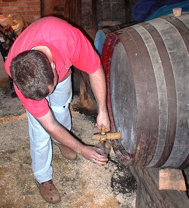

| la m'suthe | measure |
| la grandeu | size |
| la laîze | width |
| la haûteu | height |
| la londgeu | length |
| lé paids | weight |
| la dgèrte | circumference, girth |
| la circonféthence | circumference |
| lé dgiamètre | diameter |
| la profondeu | depth |
|
|
|
| un pouce | an inch |
| un pid | a foot |
| un pid d'Rouai | a Jersey foot |
| eune vèrgue | a yard |
| un mètre | a metre |
| eune aune | an ell |
| un kilomètre | a kilometre |
| un mille | a mile |
|
|
|
| eune démié-pînte | ½ pint |
| eune pînte | a pint |
| un litre | a litre |
| un gallon | a gallon |
| un quarchonnyi | ¼ cabot |
| un nodgîn | 1/8 pint |
| un d'mié-nodgîn | 1/16 pint |
| un bouessé | bushel |
| un cabot | 40 pints |
| un pot | 4 pints |
| eune pipe | 120 gallons |
| un quartchi | 8 cabots |
| un siêxtonnyi | 1/6 cabot |
| eune quarte | quart |
|
|
|
| un granme | a gramme |
| eune onche | an ounce |
| un quart'ron | a quarter pound |
| eune démié-livre | half a pound |
| eune livre | a pound |
| un kilo | a kilo |
| un chent | hundredweight |
| un tchînta | quintal |
| un tonné | a ton |
|
|
|
| eune pèrque | a perch (=484 sq.ft.) |
| eune vrégie | a vergee (=40 perch) |
| eune acre | an acre |
|
|
|
| eune brache | a fathom |
| eune pînchie | a pinch |
| eune tchul'lée | a spoonful |
|
|
|
| la tempéthatuthe | the temperature |
| un dégré | a degree |
| m'suther | to measure |
| dgèrter | to measure circumference |
| b'ser | to weigh |
| la m'suth'thie | measuring, measurement |

Des m'suthes en bathis
| pot | = 2 quartes |
| bidon | = 1 pot / 2 pots |
| d'mié-bathi | = 15 pots |
| bathi | = 30 pots / 4 cabots |
| d'mié-bârrique | = 50 pots / 60 pots |
| bârrique | = 110 pots / 120 pots / 150 pots |
| pipe / botte | = 240 pots |
| ponchon / vette | = 280 pots / 300 pots |
| gros boucaût | = 1,000 pots |
| tonné | = 4 ponchons / 500-1,000 pots / 1,200 pots |
Viyiz étout: